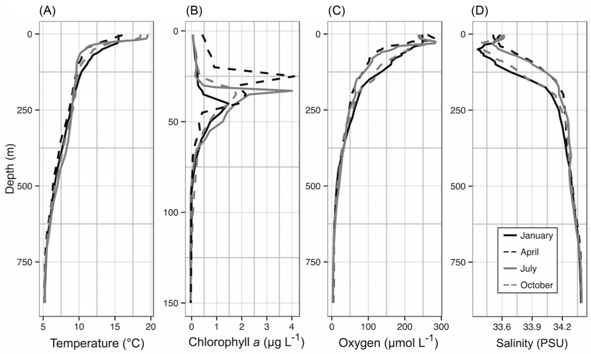
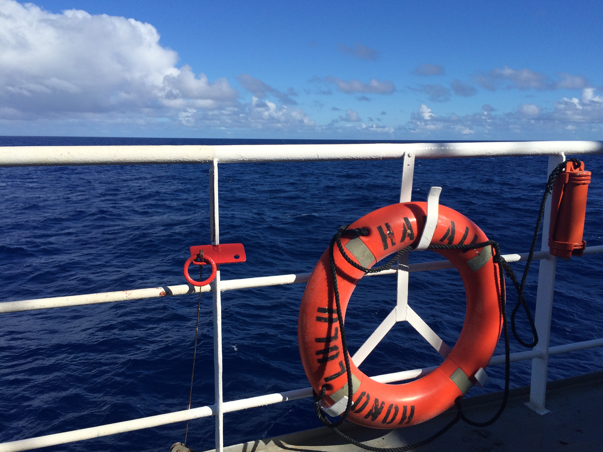

Time-series
The diversity of microbial eukaryotic trophic strategies makes them key players in marine food webs. Protists are single-celled microbial eukaryotes that play numerous ecological roles at the epicenter of marine food webs as primary producers, consumers, mixotrophs (mixed phototrophic and heterotrophic nutrition), and as partners in various mutualistic or parasitic associations. Within the diverse array of eukaryotic species, protist functional groups that exhibit heterotrophic nutrition or combined phototrophic and heterotrophic nutrition (mixotrophy) have been especially overlooked, especially from in situ studies.

1 Questions
How does microbial eukaryotic community diversity change over time and space?
What environmental features have the largest impact on shaping protistn community composition?
What is the role of the microbial rare biosphere in marine habitats?
2 The SPOT station
The San Pedro Ocean Time-series (SPOT) station is located about half way between the Port of Los Angeles and Santa Catalina Island. SPOT is a part of the Wrigley Institute and University of Southern California, it is a long-term study site that has been visited, sampled, and studied monthly for over 15 years. As a PhD student, one of my main roles was sampling every month - which meant that in addition to contributing to a long-term sampling effort, I got to ask my own research questions that were scientifically and logistically support by this station.
Each month, we would conduct CTD casts to obtain oceanographic measurements from the water column surface to just above the bottom (~880 meters). Alongside CTD data, we would capture seawater at each site, including the surface, deep chlorophyll maximum, oxycline (~150 m), and hypoxic depth (~880 m). By collecting this seawater monthly, we have been able to capture seasonal and annual trends in the microbial community (i.e., species richness, relative abundances).

Findings from the SPOT station
Naturally-occurring transition zones, such as nutriclines or oxyclines (where oxygen dramatically decreases) attract microorganisms. As a result, there is typically an uptick in microbial species richness, abundance, and activity localized to these sites. Subsequently, microorganisms that consume other microbes (such as protistan heterotrophs) will also be draw to this environment with available prey.
Microeukaryotic community diversity and metabolic activity peak at the oxycline
DNA-based observations of microbial eukaryotic populations had revealed that heterotrophic species where present throughout the water column and had a relative increase in the number of species at the oxycline. In a paper from 2016, we used both RNA and DNA tag-sequencing analyses to (1) assess if there was a difference in using RNA and DNA in tag-sequence surveys and to (2) determine if this approach could be used to infer metabolic activity.
To access the metabolically-active component of the protistan community at SPOT, we also applied metatranscriptomics. After extracting total RNA from each depth at the SPOT station, we isolated and sequenced the messenger RNA. By matching mRNA sequences to reference transcriptome databases, we can annotate the taxonomic origin and gene identity (functional potential). In the case of the metabolically diverse protists, results from the metatranscriptome analysis brought us closer to simultaneously characterizing the trophic mode and taxonomic identity. At the oxycline, there was a distinct shift in the known heterotrophic taxa, such as ciliates - where a relative increase in transcripts related to fatty acid breakdown was observed. Similarly, taxa known to be mixotrophic (e.g., haptophytes) had distinct transcript profiles in the euphotic and sub-euphotic zones. At the surface, transcripts associated with phototrophy were higher compared to transcripts associated with heterotrophic modes of nutrition at depths without sunlight.
Surface phytoplankton community varies according to environment.

3 HOT
The Hawaii Ocean Time-series (HOT) samples station ALOHA - or A Long-Term Oligotrophic Habitat Assessment monthly. This time series has been running for over 30 years. As part of the Simons Foundation funded SCOPE collaboration, I was able to be involved in several cruises to station ALOHA. This was an exciting opportunity to study the oligotrophic North Pacific Subtropical Gyre and compare our findings and methods to the coastal ecosystem of California.
For one field season, we conducted high-resolution diel sampling by following a parcel of water and sampling every 4 hours. As a result of this work, we captured daily fluctuations in microbial community dynamics, including species compositions, microbe-microbe-interactions, grazing activity, and details of how microbial photosynthetic machinery operates on an hourly time scale.
Species-specific nutritional needs drive temporal niche partitioning among protistan primary producers and consumers.